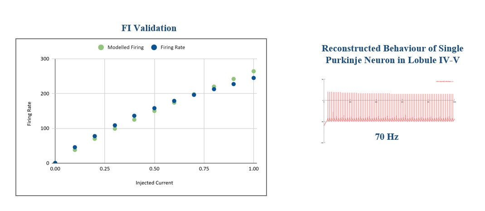
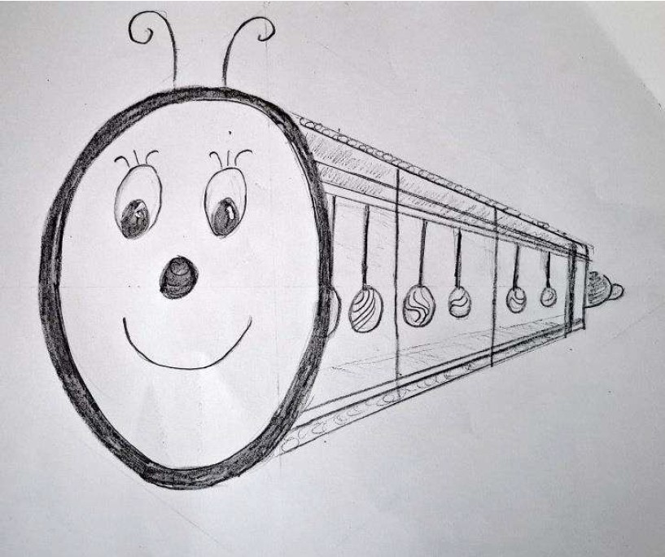

Honours Thesis
The Impact of Emotion in Visuospatial Working Memory
JSPC, OP Jindal Global University, Sonipat, 2024
Cognitive Sciences | Psychology | Research | Human AI Interaction | Social Impact
Portfolio of Kaavya Lakshmi

I am currently completing my MSc in Cognitive Sciences, Learning, and Technology at Amrita Vishwa Vidyapeetham. I completed my BA (Hons) in Psychology from O.P. Jindal Global University. I am interested in working in the areas of human-computer interaction, humane technology design, ethical AI, cognitive neuroscience, mental health, and social justice.
Delving deeper into psychology and cognitive sciences has shown me that there is always something more to learn and understand about the human mind. I view human experience as dynamic and ever-changing. We are continuously shaped by the systems around us, including our institutions, culture, and our interactions with other people and nature. Thus, placing myself within a defined box does not feel right to me, as I see my knowledge and interests as continually evolving.
One thing I can say for certain is that I love examining phenomena from multiple angles, especially from a humanistic perspective that concerns the minds of people. My involvement in psychology and cognitive sciences has made me particularly attuned to how people behave, think, and feel, both as individuals and as communities. My research so far has focused on emotions, memory, decision-making, and learning. Moving forward, I hope to broaden these areas by exploring human phenomena through a macroscopic lens and engaging with fields such as ethics, social justice, human-computer interaction, neuroscience, and artificial intelligence.
What excites me most at the moment is working in interdisciplinary teams where diverse perspectives debate, discuss, and collaborate on the same phenomenon. Although I come from a social science background, during my Master's degree I have worked on technical projects in deep learning, computational neuroscience, neurophysiology, and AI. I have also challenged myself through initiatives such as building websites using platforms like Google Sites for the Cognitive Labyrinth project, and creating my portfolio website using prompt engineering and basic coding skills with VS Code and GitHub. One defining quality that shapes how I view my future is my willingness to take on challenges, particularly learning and working in areas where I did not initially have a systematic foundation. This openness allows me to explore different possibilities in a rapidly changing world.
Despite this emphasis on change and evolving knowledge, I remain deeply committed to serving the social good. I am motivated to contribute to causes such as environmental protection, disaster management, and equity in access to healthcare and employment. I believe meaningful action can contribute to systemic change, and I want to be an active part of that process.

The Impact of Emotion in Visuospatial Working Memory
JSPC, OP Jindal Global University, Sonipat, 2024
Global Gender Differences in Access to Technology Support
Amrita Vishwa Vidyapeetham, 2025-2026
Understanding How Teachers Classify Students' Affective States Using Quantitative and Qualitative Data
Amrita Vishwa Vidyapeetham, 2025–2026

Developed a project website using Google Sites as part of the Cognitive Labyrinth Exhibition. Served as Digital Coordinator by designing QR codes for each stall and collaborating with station representatives to curate and showcase their content effectively on the platform.
International Conference of Gender and Technology 2025, Amrita Vishwa Vidyapeetham
Visit Website
Worked on Transfer Learning Neural Network to predict Dog Emotions and compared the model's prediction between Indian and International Dog Breeds. The project aimed to understand the differences in training accuracy of convolutional neural networks when using pretrained models, such as EfficientNet and MobileNet.
Part of Course, Department of Cognitive Sciences and Psychology, Amrita Vishwa Vidyapeetham, 2025
Team: Kaavya, Tuba
GitHub Repository
Worked on a project that aimed to computationally model the single-neuron dynamics of Purkinje cells and Deep Cerebellar Nucleus neurons in the vermis region of the cerebellum using the Adaptive Exponential Integrate-and-Fire framework. The project was implemented in the NEURON simulation environment based on experimental studies, including Kim (2012).
Specialization Course, Mind Brain Centre, Amrita Vishwa Vidyapeetham, 2025
Team: Kaavya Lakshmi, Sruthi Santhosh Kumar, Lekshmi I

Participated in the Cognify toy design competition as part of a team. Designed Oscilipillar, an interactive, modular toy for children aged 3 to 5 years featuring oscillating, glitter-filled bobs that move like pendulums to capture visual attention and encourage coordinated eye movements.
Cognify - A Toy Design Contest, IIT Madras, 2024
Team: Kaavya, Steffy, Ajeetha
CertificateI'd love to hear from you. Feel free to reach out with opportunities or just to connect.